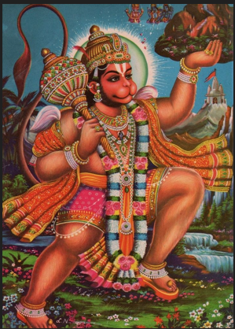

॥ॐ॥
मनोजवं मारुततुल्यवेगं जितेन्द्रियं बुद्धिमतां वरिष्ठम्।
वातात्मजं वानरयूथमुख्यं श्रीरामदूतं शरणं प्रपद्ये॥
Yudhdhakanda Sarga 74
Instructed by Jambavan, Hanuman goes to the Himalayas, gets the herbs along with the hillock. Inhaling the fragrance of the herbs Rama and Lakshmana regain their senses. The Vanaras lying unconscious, are healed by the fragrance, relieved of pain and awakened.

(77 Shlokas)
तयोस्तदा सादितयो रणाग्रे मुमोह सैन्यं हरिपुङ्गवानाम् ।
सुग्रीवनीलाङ्गदजाम्बवन्तो न चापि किञ्चित् प्रतिपेदिरे ते ॥6.74.1॥
Word-by-word meaning: तयोः of those two, तदा then, सादितयोः having been struck down, रणाग्रे in the front of the battle, मुमोह became despondent, सैन्यम् the army, हरिपुङ्गवानाम् of the leaders of the monkeys, सुग्रीव-नील-अङ्गद-जाम्बवन्तः Sugriva, Nila, Angada, and Jambavan, न not, च and, अपि even, किञ्चित् anything, प्रतिपेदिरे knew what to do, ते they
Anvaya: तदा तयोः रणाग्रे सादितयोः हरिपुङ्गवानां सैन्यं मुमोह। ते सुग्रीवनीलाङ्गदजाम्बवन्तः च अपि किञ्चित् न प्रतिपेदिरे।
Simple meaning: When those two (Rama and Lakshmana) were struck down at the front of the battle, the army of the monkey leaders became completely despondent. Even Sugriva, Nila, Angada, and Jambavan did not know what to do next.
ततो विषण्णं समवेक्ष्य सैन्यं विभीषणो बुद्धिमतां वरिष्ठः ।
उवाच शाखमृगराजवीरान आश्वासयन् अप्रतिमैर्वचोभिः ॥6.74.2॥
Word-by-word meaning: ततः then, विषण्णम् dejected, समवेक्ष्य having closely observed, सैन्यम् the army, विभीषणः Vibhishana, बुद्धिमताम् among the intelligent ones, वरिष्ठः the foremost, उवाच spoke, शाखा-मृग-राज-वीरान् to the heroic warriors of the monkey king, आश्वासयन् consoling, अप्रतिमैः with incomparable, वचोभिः words
Anvaya: ततः बुद्धिमतां वरिष्ठः विभीषणः विषण्णं सैन्यं समवेक्ष्य, शाखामृगराजवीरान् अप्रतिमैः वचोभिः आश्वासयन् उवाच।
Simple meaning: Then, seeing the army cast down in dejection, Vibhishana, the foremost among the wise, spoke to the heroic warriors of the monkey king, comforting them with excellent words.
मा भैष्ट नास्त्यत्र विषादकालो यदार्यपुत्रौ अवशौ विषण्णौ ।
स्वयम्भुवो वाक्यमथोद्वहन्तौ यत्सादिताविन्द्रजिदस्त्रजालैः ॥6.74.3॥
Word-by-word meaning: मा भैष्ट do not fear, न अस्ति there is not, अत्र here, विषाद-कालः time for despair, यत् because, आर्यपुत्रौ the two noble princes (Rama and Lakshmana), अवशौ helpless, विषण्णौ dejected, स्वयम्भुवः of Brahma (the self-born), वाक्यम् the word, अथ and, उद्वहन्तौ honoring/respecting, यत् since, सादितौ have been struck down, इन्द्रजित्-अस्त्र-जालैः by the network of weapons of Indrajit
Anvaya: मा भैष्ट, अत्र विषादकालः न अस्ति; यत् आर्यपुत्रौ अवशौ विषण्णौ (दृश्येते) – यत् (तौ) स्वयम्भुवः वाक्यम् उद्वहन्तौ अथ इन्द्रजिदस्त्रजालैः सादितौ।
Simple meaning: “Do not fear, this is not the time for despair. Though the two noble princes appear helpless and dejected, they have been struck down by the network of Indrajit's weapons only because they are honoring the word and power of Lord Brahma.
तस्मै तु दत्तं परमास्त्रमेतत्स्वयम्भुवा ब्राह्मममोघवेगम् ।
तन्मानयन्तौ युधि राजपुत्रौ निपातितौ कोऽत्र विषादकालः ॥6.74.4॥
Word-by-word meaning: तस्मै to him (Indrajit), तु indeed, दत्तम् given, परम-अस्त्रम् the supreme weapon, एतत् this, स्वयम्भुवा by Brahma (the self-born), ब्राह्मम् presiding over by Brahma (the Brahmastra), अमोघ-वेगम् of infallible speed, तत् that, मानयन्तौ honoring, युधि in the battle, राजपुत्रौ the two princes, निपातितौ have been brought down, कः what, अत्र here, विषाद-कालः time for despair
Anvaya: स्वयम्भुवा तस्मै तु एतत् अमोघवेगं ब्राह्मं परमास्त्रं दत्तम्। युधि तत् मानयन्तौ राजपुत्रौ निपातितौ, अत्र विषादकालः कः?
Simple meaning: “This supreme and infallibly swift weapon of Brahma was granted to Indrajit by Lord Brahma himself. The two princes have been brought down in battle only because they are honoring that weapon; what room is there for despair here?”
ब्राह्ममस्त्रं ततो धीमान्मानयित्वा तु मारुतिः ।
विभीषणवचश्श्रुत्वा हनूमांस्तमथाब्रवीत् ॥6.74.5॥
Word-by-word meaning: ब्राह्मम् presiding over by Brahma (the Brahmastra), अस्त्रम् weapon, ततः then, धीमान् the wise, मानयित्वा having honored, तु indeed, मारुतिः the son of the Wind-God (Hanuman), विभीषण-वचः the words of Vibhishana, श्रुत्वा having heard, हनूमान् Hanuman, तम् to him, अथ then, अब्रवीत् spoke
Anvaya: ततः धीमान् मारुतिः हनूमान् तु ब्राह्मम् अस्त्रं मानयित्वा, विभीषणवचः श्रुत्वा, अथ तम् अब्रवीत्।
Simple meaning: Then, the wise Hanuman, the son of the Wind-God, having honored the weapon of Brahma, listened to the words of Vibhishana and spoke to him as follows.
एतस्मिन्निहते सैन्ये वानराणां तरस्विनाम् ।
यो यो धारयते प्राणांस्तं तमाश्वासयावहे ॥6.74.6॥
Word-by-word meaning: एतस्मिन् this, निहते having been struck down/fallen, सैन्ये the army, वानराणाम् of the monkeys, तरस्विनाम् of the energetic/powerful ones, यः यः whosoever, धारयते maintains/holds, प्राणान् life-breaths, तम् तम् him, आश्वासयावहे let us both console/comfort
Anvaya: एतस्मिन् तरस्विनां वानराणां सैन्ये निहते, यः यः प्राणान् धारयते, तं तम् (आवाम्) आश्वासयावहे।
Simple meaning: “Now that this army of powerful monkeys has been struck down, let us both look for whoever is still holding onto life and console them.”
तावुभौ युगपवदीरौ हनूमद्राक्षसोत्तमौ ।
उल्काहस्तौ तदा रात्रौ रणशीर्षे विचेरतुः ॥6.74.7॥
Word-by-word meaning: तौ those two, उभौ both, युगपत् simultaneously / together, वीरौ the heroes, हनूमत्-राक्षस-उत्तमौ Hanuman and the best of Rakshasas (Vibhishana), उल्का-हस्तौ holding torches in their hands, तदा then, रात्रौ at night, रण-शीर्षे on the front of the battlefield, विचेरतुः walked around / searched
Anvaya: तदा रात्रौ तौ उभौ वीरौ हनूमद्राक्षसोत्तमौ उल्काहस्तौ (भूत्वा) युगपत् रणशीर्षे विचेरतुः।
Simple meaning: Then, at night, both those heroes—Hanuman and Vibhishana, the best of the Rakshasas—holding torches in their hands, walked around the front of the battlefield together to search the area.
भिन्नलाङ्गूलहस्तोरुपादाङ्गुलिशिरोधरैः ।
स्रवद्भिः क्षतजंगात्रैः प्रस्रवद्भिस्ततस्ततः ॥6.74.8॥
Word-by-word meaning: भिन्न-लाङ्गूल-हस्त-ऊरु-पाद-अङ्गुलि-शिरोधरैः with severed tails, hands, thighs, feet, fingers, and necks, स्रवद्भिः bleeding/flowing, क्षतजम् blood, गात्रैः from limbs, प्रस्रवद्भिः streaming down, ततः ततः here and there
Anvaya: (ते वानराः) भिन्नलाङ्गूलहस्तोरुपादाङ्गुलिशिरोधरैः गात्रैः क्षतजं स्रवद्भिः ततः ततः प्रस्रवद्भिः (च आसन्)।
Simple meaning: The monkeys lay everywhere with severed tails, hands, thighs, feet, fingers, and necks, with blood flowing and streaming down from their wounded limbs.
पतितैः पर्वताकारैः वानरैरभिसंवृताम् ।
शस्त्रैश्च पतितैर्दीप्तैः ददृशाते वसुन्धराम् ॥6.74.9॥
Word-by-word meaning: पतितैः with the fallen, पर्वत-आकारैः who possessed mountain-like forms, वानरैः by the monkeys, अभिसंवृताम् completely covered, शस्त्रैः by weapons, च and, पतितैः fallen, दीप्तैः shining/glowing, ददृशाते the two of them saw, वसुन्धराम् the earth
Anvaya: (तौ) पतितैः पर्वताकारैः वानरैः दीप्तैः पतितैः शस्त्रैः च अभिसंवृतां वसुन्धरां ददृशाते।
Simple meaning: The two of them saw the earth completely covered with fallen monkeys of mountain-like proportions, as well as with glowing weapons that lay scattered everywhere.
सुग्रीवमङ्गदं नीलम् शरभं गन्धमादनम् ।
गवाक्षं च सुषेणं च वेगदर्शिनमेव च ॥6.74.10॥
Word-by-word meaning: सुग्रीवम् Sugriva, अङ्गदम् Angada, नीलम् Nila, शरभम् Sharabha, गन्धमादनम् Gandhamadana, गवाक्षम् Gavaksha, च and, सुषेणम् Sushena, च and, वेगदर्शिनम् Vegadarshi, एव च as well as
Anvaya: (तौ) सुग्रीवम् अङ्गदं नीलं शरभं गन्धमादनं गवाक्षं च सुषेणं च वेगदर्शिनम् एव च (ददृशाते)।
Simple meaning: The two of them saw Sugriva, Angada, Nila, Sharabha, Gandhamadana, Gavaksha, Sushena, as well as Vegadarshi lying on the battlefield.
मैन्दं नलं ज्योतिमुखं द्विविदं पनसं तथा ।
एतांश्चान्यांस्ततो वीरौ ददृशाते हतान् रणे ॥6.74.11॥
Word-by-word meaning: मैन्दम् Mainda, नलम् Nala, ज्योतिमुखम् Jyotimukha, द्विविदम् Dvivida, पनसम् Panasa, तथा and also, एतान् these, च and, अन्यान् others, ततः then, वीरौ the two heroes (Hanuman and Vibhishana), ददृशाते saw, हतान् struck down/fallen, रणे in the battle
Anvaya: ततः वीरौ मैन्दं नलं ज्योतिमुखं द्विविदं पनसं तथा एतान् अन्यान् च रणे हतान् ददृशाते।
Simple meaning: Then, those two heroes saw Mainda, Nala, Jyotimukha, Dvivida, Panasa, and many other warriors struck down on the battlefield.
सप्तषष्टिर्हताः कोट्यो वानराणां तरस्विनाम् ।
अह्नः पञ्चमशेषेण वल्लभेन स्वयम्भुवः ॥6.74.12॥
Word-by-word meaning: सप्त-षष्टिः sixty-seven, हताः were struck down, कोट्यः crores (ten-millions), वानराणाम् of the monkeys, तरस्विनाम् energetic/powerful, अह्नः of the day, पञ्चम-शेषेण by the fifth part remaining (in the late afternoon), वल्लभेन by the favorite, स्वयम्भुवः of Brahma (the self-born, referring to Indrajit)
Anvaya: अह्नः पञ्चमशेषेण स्वयम्भुवः वल्लभेन तरस्विनां वानराणां सप्तषष्टिः कोट्यः हताः।
Simple meaning: Within the remaining fifth part of the day (in the late afternoon), sixty-seven crore powerful monkeys were struck down by Indrajit, the favorite recipient of Lord Brahma's boons.
Note: The twelve hours of the day were commonly divided into five parts consisting of six Ghatikas (or two hours and twenty four minutes) each. They were known by the names of Pratah (early morning), Sangava (forenoon), Madhyaahna (midday), Aparaahna (afternoon) and Saayaahna (evening).
सागरौघनिभं भीमं दृष्टवा बाणार्दितं बलम् ।
मार्गते जाम्बवन्तं स्म हनूमान् सविभीषणः ॥6.74.13॥
Word-by-word meaning: सागर-ओघनिभम् resembling the ocean-flood, भीमम् terrifying, दृष्ट्वा having seen, बाण-आर्दितम् afflicted by arrows, बलम् the army, मार्गते searched for, जाम्बवन्तम् Jambavan, स्म (indicates past action), हनूमान् Hanuman, सविभीषणः along with Vibhishana
Anvaya: बाणार्दितं सागरौघनिभं भीमं बलं दृष्ट्वा हनूमान् सविभीषणः जाम्बवन्तं मार्गते स्म।
Simple meaning: Having seen that terrifying army, which resembled a vast ocean-flood, completely devastated and afflicted by arrows, Hanuman along with Vibhishana searched for Jambavan.
स्वभावजरया युक्तं वृद्धं शरशतैश्चितम् ।
प्रजापतिसुतं वीरं शाम्यन्तमिव पावकम् ॥6.74.14॥
दृष्टवा तमुपसङ्ग्रम्य पौलस्त्यो वाक्यमब्रवीत् ।
Word-by-word meaning: स्वभाव-जरया by natural old age, युक्तम् endowed with, वृद्धम् the aged one, शर-शतैः with hundreds of arrows, चितम् covered/pierced, प्रजापति-सुतम् the son of Prajapati (Brahma), वीरम् the heroic warrior, शाम्यन्तम् extinguishing/dying down, इव like, पावकम् a fire, दृष्ट्वा having seen, तम् him, उपसङ्गम्य having approached, पौलस्त्यः the descendant of Pulastya (Vibhishana), वाक्यम् words, अब्रवीत् spoke
Anvaya: स्वभावजरया युक्तं वृद्धं शरशतैः चितं -- शाम्यन्तं पावकम् इव -- वीरं प्रजापतिसुतं दृष्ट्वा पौलस्त्यः तम् उपसङ्गम्य वाक्यम् अब्रवीत्।
Simple meaning: Having seen the heroic son of Prajapati (Jambavan), who was advanced in natural old age, covered with hundreds of arrows, and looking like a dying fire, Vibhishana approached him and spoke these words.
कच्चिदार्य शरैस्तीक्ष्णैर्न प्राणा ध्वंसितास्तव ॥6.74.15॥
विभीषणवचश्श्रुत्वा जाम्बवानृक्षपुङ्गवः ।
कृच्छ्रात् अभ्युगदिरन् वाक्यमिदं वचनमब्रवीत् ॥6.74.16॥
Word-by-word meaning: कच्चित् I hope that, आर्य O noble one, शरैः by the sharp arrows, तीक्ष्णैः by the sharp ones, न not, प्राणाः life-breaths, ध्वंसिताः destroyed, तव yours, विभीषण-वचः the words of Vibhishana, श्रुत्वा having heard, जाम्बवान् Jambavan, ऋक्ष-पुङ्गवः the chief of the bears, कृच्छ्रात् with great difficulty, अभ्युद्गिरन् uttering/speaking out, वाक्यम् words, इदम् this, वचनम् speech, अब्रवीत् said
Anvaya: “आर्य! तव प्राणाः तीक्ष्णैः शरैः न ध्वंसिताः कच्चित्?” – विभीषणवचः श्रुत्वा ऋक्षपुङ्गवः जाम्बवान् कृच्छ्रात् वाक्यम् अभ्युद्गिरन् इदं वचनम् अब्रवीत्।
Simple meaning: "O noble one! I hope your life-breaths have not been destroyed by those sharp arrows?" Hearing these words of Vibhishana, Jambavan, the chief of the bears, speaking out with great difficulty, replied with these words.
नैरृतेन्द्र महावीर्य स्वरेण त्वाऽभिलक्ष्ये ।
पीड्यमानः शितैर्बाणैः न त्वां पश्यामि चक्षुषा ॥6.74.17॥
Word-by-word meaning: नैरृतेन्द्र O lord of the Rakshasas (Vibhishana), महावीर्य O one of great prowess, स्वरेण by the voice, त्वा you, अभिलक्ष्ये I recognize, पीड्यमानः being afflicted, शितैः by the sharp, बाणैः by arrows, न not, त्वाम् you, पश्यामि I see, चक्षुषा with my eyes
Anvaya: महावीर्य नैरृतेन्द्र! स्वरेण त्वा अभिलक्ष्ये। शितैः बाणैः पीड्यमानः चक्षुषा त्वां न पश्यामि।
Simple meaning: O lord of the Rakshasas of great prowess! I recognize you only by your voice. Being severely afflicted by sharp arrows, I am unable to see you with my eyes.
अञ्जना सुप्रजा येन मातरिश्वा च नैरृत ।
हनुमान् वानरश्रेष्ठः प्राणान् धारयते क्वचित् ॥6.74.18॥
Word-by-word meaning: अञ्जना Anjana, सु-प्रजाः the parents of the noble son, येन by whom, मातरिश्वा the Wind-God (Matarishva), च and, नैरृत O Rakshasa (Vibhishana), हनुमान् Hanuman, वानरश्रेष्ठः the chief of the Vanaras, प्राणान् life-breaths, धारयते is holding/sustaining, क्वचित् anywhere/is he alive
सुप्रजाः - सु प्रजा येषां ते - बहुव्रीहिः समासः
Anvaya: नैरृत! येन अञ्जना मातरिश्वा च सुप्रजाः (स्तः), सः वानरश्रेष्ठः हनुमान् क्वचित् प्राणान् धारयते?
Simple meaning: O Rakshasa! Is that chief of the Vanaras, By whom Anjana and the Wind-God are called parents of the noble child — that Hanuman still holding onto his life-breaths anywhere? Is he alive?
श्रुत्वा जाम्बवतो वाक्यमुवाचेदं विभीषणः ।
आर्यपुत्रावतिक्रम्य कस्मात् पृच्छसि मारुतिम् ॥6.74.19॥
Word-by-word meaning: श्रुत्वा having heard, जाम्बवतः of Jambavan, वाक्यम् the words, उवाच replied, इदम् this, विभीषणः Vibhishana, आर्यपुत्रौ the two sons of the noble emperor (Rama and Lakshmana), अतिक्रम्य bypassing/setting aside, कस्मात् why, पृच्छसि are you asking about, मारुतिम् Hanuman (the son of Maruta)
Anvaya: विभीषणः जाम्बवतः वाक्यं श्रुत्वा इदम् उवाच– "आर्य! आर्यपुत्रौ अतिक्रम्य कस्मात् मारुतिं पृच्छसि?"
Simple meaning: Hearing these words of Jambavan, Vibhishana replied with this speech, "O noble one! Bypassing the two princely sons of the noble emperor Rama and Lakshmana, why are you inquiring specifically about Maruti?
नैव राजनि सुग्रीवे नाङ्गदेनापि राघवे ।
आर्य सन्दर्शितस्स्नेहो यथा वायुसुते परः ॥6.74.20॥
Word-by-word meaning: न एव not at all, राजनि in the king, सुग्रीवे in Sugriva, न nor, अङ्गदे in Angada, न अपि nor even, राघवे in Raghava (Rama), आर्य O noble one, सन्दर्शितः shown, स्नेहः affection, यथा as, वायु-सुते in the son of the Wind-God (Hanuman), परः supreme/great
Anvaya: आर्य! राजनि सुग्रीवे न, अङ्गदे अपि न, राघवे च अपि स्नेहः न एव (सन्दर्शितः), यथा वायुसुते परः स्नेहः सन्दर्शितः।
Simple meaning: “O noble one! Such supreme affection has not been shown by you toward King Sugriva, nor toward Angada, nor even toward Raghava, as has been shown toward Hanuman, the son of the Wind-God.
विभीषणवचश्श्रुत्वा जाम्बवान्वाक्यमब्रवीत् ।
शृणु नैरृतशार्दूल यस्मात् पृच्छामि मारुतिम् ॥6.74.21॥
Word-by-word meaning: विभीषण-वचः the words of Vibhishana, श्रुत्वा having heard, जाम्बवान् Jambavan, वाक्यम् words, अब्रवीत् said, शृणु listen, नैरृत-शार्दूल O tiger among the Rakshasas, यस्मात् the reason why, पृच्छामि I am asking about, मारुतिम् Hanuman (the son of Maruta)
Anvaya: विभीषणवचः श्रुत्वा जाम्बवान् वाक्यम् अब्रवीत्– "नैरृतशार्दूल! शृणु, यस्मात् मारुतिं पृच्छामि।"
Simple meaning: Hearing the words of Vibhishana, Jambavan replied with these words, "O tiger among the Rakshasas! Listen to the reason why I am inquiring about Maruti.
तस्मिन्जीवति वीरे तु हतमप्यहतं बलम् ।
हनूमत्युज्झितप्राणे जीवन्तोऽपि वयं हृता ॥6.74.22॥
Word-by-word meaning: तस्मिन् if he, जीवति is alive, वीरे the hero, तु indeed, हतम् अपि even if destroyed, अहतम् is not destroyed, बलम् the army, हनूमति if Hanuman, उज्झित-प्राणे has given up his life-breaths, जीवन्तः अपि even though living, वयम् we, हृताः are dead/destroyed
Anvaya: तस्मिन् वीरे जीवति तु हतम् अपि बलम् अहतम्। हनूमति उज्झितप्राणे (सति) वयं जीवन्तः अपि हृताः।
Simple meaning: “If that hero Hanuman is alive, even if our army is completely destroyed, it is as good as not destroyed. But if Hanuman has given up his life-breaths, then even though we are all still living, we are as good as dead.
धरते मारुतिस्तात मारुतप्रतिमो यदि ।
वैश्वानरसमो वीर्ये जीविताशा ततो भवेत् ॥6.74.23॥
Word-by-word meaning: धरते holds/sustains (life), मारुतिः Maruti (Hanuman), तात O dear one, मारुत-प्रतिमः equal to the Wind-God, यदि if, वैश्वानर-समः equal to the Fire-God, वीर्ये in prowess, जीवित-आशा hope of life, ततः then, भवेत् will be
Anvaya: तात! मारुतप्रतिमः वीर्ये वैश्वानरसमः मारुतिः यदि धरते, ततः जीविताशा भवेत्।
Simple meaning: “O dear one! If Maruti, who is equal to the Wind-God in speed and equal to the Fire-God in prowess, still sustains his life, then there is hope for us to remain alive.”
ततो वृद्धमुपागम्य नियमेनाभ्यवादयत् ।
गृह्य जाम्बवतः पादौ हनूमान्मारुतात्मजः ॥6.74.24॥
Word-by-word meaning: ततः then, वृद्धम् the elderly (Jambavan), उपागम्य having approached, नियमेन according to the traditional rules/rituals, अभ्यवादयत् saluted/paid respects, गृह्य having grasped, जाम्बवतः of Jambavan, पादौ the two feet, हनूमान् Hanuman, मारुतात्मजः the son of the Wind-God
Anvaya: ततः मारुतात्मजः हनूमान् उपागम्य जाम्बवतः पादौ गृह्य नियमेन वृद्धम् अभ्यवादयत्।
Simple meaning: Then, Hanuman, the son of the Wind-God, approached the elderly Jambavan, held his feet, and respectfully saluted him according to the traditional rules of etiquette.
श्रुत्वा हनुमतो वाक्यं तदाऽपि व्यथितेन्द्रियः ।
पुनर्जातमिवात्मानं मन्यते प्लवगोत्तमः ॥6.74.25॥
Word-by-word meaning: श्रुत्वा having heard, हनुमतः of Hanuman, वाक्यम् the words, तदा अपि even then, व्यथित-इन्द्रियः one whose senses were afflicted/tormented, पुनर्जातम् इव as if born again, आत्मानम् himself, मन्यते considered, प्लवगोत्तमः the foremost among the monkeys (Jambavan)
Anvaya: तदा अपि व्यथितेन्द्रियः प्लवगोत्तमः हनुमतः वाक्यं श्रुत्वा आत्मानं पुनर्जातम् इव मन्यते।
Simple meaning: Even though his senses were severely tormented at that time, Jambavan, the foremost among the monkeys, upon hearing the words of Hanuman, considered himself as if born again.
ततोऽब्रवीन्महातेजा हनूमन्तं स जाम्बवान् ।
आगच्छ हरिशार्दूल वानरांस्त्रातुमर्हसि ॥6.74.26॥
Word-by-word meaning: ततः then, अब्रवीत् said, महातेजाः one of great splendor, हनूमन्तम् to Hanuman, सः that, जाम्बवान् Jambavan, आगच्छ come forward, हरिशार्दूल O tiger among the monkeys, वानरान् the vanaras, त्रातुम् to rescue/save, अर्हसि you ought to
Anvaya: ततः सः महातेजाः जाम्बवान् हनूमन्तं अब्रवीत् – "हरिशार्दूल! आगच्छ, वानरान् त्रातुम् अर्हसि।"
Simple meaning: Then, that elder of great splendor, Jambavan, said to Hanuman, "O tiger among the monkeys! Come forward, you ought to rescue and save the vanaras.
नान्यो विक्रमपर्याप्तस्त्वमेषां परमस्सखा ।
त्वत्पराक्रमकालोऽयं नान्यं पश्यामि कथञ्चन ॥6.74.27॥
Word-by-word meaning: न not, अन्यः another, विक्रम-पर्याप्तः capable of this feat of prowess, त्वम् you, एषाम् for these (vanaras), परमः the supreme, सखा friend/protector, त्वत्-पराक्रम-कालः the time for your prowess, अयम् this, न not, अन्यम् another, पश्यामि I see, कथञ्चन in any manner
Anvaya: विक्रमपर्याप्तः अन्यः न (अस्ति), त्वम् एषां परमः सखा (असि)। अयं त्वत्पराक्रमकालः, कथञ्चन अन्यं न पश्यामि।
Simple meaning: “No one else is capable of displaying the required prowess at this moment; you are the supreme friend and protector of these vanaras. This is the time to unleash your valor, for I do not see anyone else in any manner who can save us.
ऋक्षवानरवीराणामनीकानि प्रहर्षय ।
विशल्यौ कुरु चाप्येतौ सादितौ रामलक्ष्मणौ ॥6.74.28॥
Word-by-word meaning: ऋक्ष-वानर-वीराणाम् of the heroic bears and monkeys, अनीकानि the armies, प्रहर्षय gladden/rejoice, वि-शल्यौ free from arrows/healed of wounds, कुरु make, च अपि and also, एतौ these two, सादितौ exhausted/collapsed, राम लक्ष्मणौ Rama and Lakshmana
Anvaya: ऋक्षवानरवीराणाम् अनीकानि प्रहर्षय। सादितौ एतौ रामलक्ष्मणौ च अपि विशल्यौ कुरु।
Simple meaning: “Gladden the hearts of the armies of heroic bears and monkeys. Also, heal these two collapsed heroes, Rama and Lakshmana, making them completely free from their arrow wounds.
गत्वा परममध्वानमुपर्युपरि सागरम् ।
हिमवन्तं नगश्रेष्ठं हनुमन्गन्तुमर्हसि ॥6.74.29॥
Word-by-word meaning: गत्वा having gone, परमम् supreme/vast, अध्वानम् path, उपर्युपरि high above, सागरम् the ocean, हिमवन्तम् Himavan (the Himalaya), नगश्रेष्ठम् the foremost among mountains, हनुमन् O Hanuman, गन्तुम् to go, अर्हसि you ought to
Anvaya: हनुमन्! सागरम् उपर्युपरि परमम् अध्वानं गत्वा नगश्रेष्ठं हिमवन्तं गन्तुम् अर्हसि।
Simple meaning: “O Hanuman! You ought to travel across the vast path high above the ocean and reach Himavan, the foremost among mountains.
ततः काञ्चनमत्युच्चमृषभं पर्वतोत्तमम् ।
कैलासशिखरं चापि द्रक्ष्यस्यरिनिषूदन ॥6.74.30॥
Word-by-word meaning: ततः then, काञ्चनम् golden, अत्युच्चम् exceedingly high, ऋषभम् Rishabha, पर्वतोत्तमम् the best among mountains, कैलास-शिखरम् the peak of Kailasa, च अपि and also, द्रक्ष्यसि you will see, अरिनिषूदन O destroyer of enemies
Anvaya: अरिनिषूदन! ततः (त्वम्) अत्युच्चं काञ्चनं पर्वतोत्तमम् ऋषभं कैलासशिखरं च अपि द्रक्ष्यसि।
Simple meaning: “O destroyer of enemies! Then you will see the exceedingly high, golden Rishabha mountain, which is the best among mountains, and also the majestic peak of Kailasa.
तयोः शिखरयोर्मध्ये प्रदीप्तमतुलप्रभम् ।
सर्वौषधियुतं वीर द्रक्ष्यस्यौषधिपर्वतम् ॥6.74.31॥
Word-by-word meaning: तयोः of those two, शिखरयोः of the peaks, मध्ये in the middle/between, प्रदीप्तम् glowing/radiant, अतुल-प्रभम् of incomparable splendor, सर्व-ओषधियुतम् filled with all medicinal herbs, वीर O hero, द्रक्ष्यसि you will see, ओषधि-पर्वतम् the mountain of herbs
Anvaya: वीर! तयोः शिखरयोः मध्ये प्रदीप्तम् अतुलप्रभं सर्वौषधियुतम् ओषधिपर्वतं द्रक्ष्यसि।
Simple meaning: “O hero! Between those two mountain peaks, you will see the radiant Mountain of Herbs, possessing incomparable splendor and filled with all kinds of medicinal herbs.
तस्य वानरशार्दूल चतस्रो मूर्ध्नि सम्भवाः ।
द्रक्ष्यस्योषधयो दीप्ता दीपयन्त्यो दिशो दश ॥6.74.32॥
Word-by-word meaning: तस्य of that (mountain), वानरशार्दूल O tiger among the monkeys, चतस्रः four, मूर्ध्नि on the summit/peak, सम्भवाः growing/born, द्रक्ष्यसि you will see, ओषधयः medicinal herbs, दीप्ताः radiant, दीपयन्त्यः illuminating, दिशः directions, दश ten
Anvaya: वानरशार्दूल! तस्य मूर्ध्नि सम्भवाः दश दिशः दीपयन्त्यः चतस्रः दीप्ताः ओषधयः द्रक्ष्यसि।
Simple meaning: “O tiger among the monkeys! On the summit of that mountain, you will see four radiant medicinal herbs growing, which illuminate all the ten directions with their light.
मृतसञ्जीवनीं चैव विशल्यकरणीमपि ।
सुवर्णकरणीं चैव सन्धानकरणीं तथा ॥6.74.33॥
Word-by-word meaning: मृत-सञ्जीवनीम् Mritasanjivani (the restorer of life), च एव and indeed, विशल्य-करणीम् Vishalyakarani (the remover of arrows/healer of wounds), अपि also, सुवर्ण-करणीम् Suvarnakarani (the restorer of natural skin complexion), च एव and indeed, सन्धान-करणीम् Sandhanakarani (the joiner of fractured bones/healer of severed limbs), तथा as well as
Anvaya: मृतसञ्जीवनीं च एव, विशल्यकरणीम् अपि, सुवर्णकरणीं च एव, तथा सन्धानकरणीम् (द्रक्ष्यसि)।
Simple meaning: “You will see Mritasanjivani (the herb that restores life), Vishalyakarani (the herb that heals arrow wounds), Suvarnakarani (the herb that restores the skin's natural complexion), as well as Sandhanakarani (the herb that joins fractured bones and severed limbs).
तास्सर्वा हनुमन्गृह्व क्षिप्रमागन्तुमर्हसि ।
आश्वासय हरीन् प्राणैर्योज्य गन्धवहात्मज ॥6.74.34॥
Word-by-word meaning: ताः those, सर्वाः all, हनुमन् O Hanuman, गृह्य having taken/gathered, क्षिप्रम् quickly, आगन्तुम् to return, अर्हसि you ought to, आश्वासय comfort/reassure, हरीन् the monkeys, प्राणैः with life, योज्य by endowing/uniting, गन्ध-वह-आत्मज O son of the carrier of the fragrances (Wind-God)
Anvaya: हनुमन् गन्धवहात्मज! ताः सर्वाः गृह्य क्षिप्रम् आगन्तुम् अर्हसि। हरीन् प्राणैः योज्य आश्वासय।
Simple meaning: “O Hanuman, son of the wind-god! You ought to gather all those medicinal herbs and return here quickly. Reassure and comfort the monkey forces by restoring them to life.”
श्रुत्वा जाम्बवतो वाक्यं हनूमान् हरिपुङ्गवः ।
आपूर्यत बलोद्धर्षैस्तोयवेगैरिवार्णवः ॥6.74.35॥
Word-by-word meaning: श्रुत्वा having heard, जाम्बवतः of Jambavan, वाक्यम् the words, हनूमान् Hanuman, हरिपुङ्गवः the bull among monkeys (foremost among monkeys), आपूर्यत filled up/swelled, बलोद्धर्षैः with an outburst of strength and enthusiasm, तोय-वेगैः by the rushes of water, इव like, अर्णवः the ocean
Anvaya: जाम्बवतः वाक्यं श्रुत्वा हरिपुङ्गवः हनूमान् – तोयवेगैः अर्णवः इव – बलोद्धर्षैः आपूर्यत।
Simple meaning: Having heard the words of Jambavan, Hanuman, the foremost among the monkeys, swelled with an outburst of strength and enthusiasm, just like the ocean swells with the rushing influx of waters.
पर्वततटाग्रस्थः पीडयन् पर्वतोत्तमम् ।
हनूमान्दृश्यते वीरो द्वितीय इव पर्वतः ॥6.74.36॥
Word-by-word meaning: पर्वत-तट-अग्र-स्थः standing on the edge of the highest peak of the mountain, पीडयन् pressing down, पर्वत-उत्तमम् the best of mountains, हनूमान् Hanuman, दृश्यते is seen, वीरः the heroic, द्वितीयः a second, इव as if, पर्वतः mountain
Anvaya: पर्वततटाग्रस्थः पर्वतोत्तमं पीडयन् वीरः हनूमान् द्वितीयः पर्वतः इव दृश्यते।
Simple meaning: Standing on the edge of the highest peak and pressing down upon that best of mountains, the heroic Hanuman looked just like a second mountain.
हरिपादविनिर्भग्नो निषसाद स पर्वतः ।
न शशाक तदात्मानं सोढुं भृशनिपीडितः ॥6.74.37॥
Word-by-word meaning: हरि-पाद-विनिर्भग्नः shattered by the feet of the monkey (Hanuman), निषसाद sank down, सः that, पर्वतः mountain, न not, शशाक was able, तदा then, आत्मानम् itself, सोढुम् to support/bear, भृश-निपीडितः severely pressed down
Anvaya: हरिपादविनिर्भग्नः भृशनिपीडितः सः पर्वतः तदा आत्मानं सोढुं न शशाक निषसाद च।
Simple meaning: Shattered by the feet of the monkey Hanuman and severely pressed down, that mountain was unable to support itself and sank down.
तस्य पेतुर्नगा भूमौ हरिवेगाच्च जज्वलुः ।
शृङ्गाणि च व्यशीर्यन्त पीडितस्य हनूमता ॥6.74.38॥
Word-by-word meaning: तस्य of that (mountain), पेतुः fell, नगाः the trees, भूमौ on the ground, हरि-वेगात् due to the speed/force of the monkey, च and, जज्वलुः caught fire, शृङ्गाणि the peaks, च and, व्यशीर्यन्त were shattered/crumbled, पीडितस्य being pressed down, हनूमता by Hanuman
Anvaya: हनूमता पीडितस्य तस्य नगाः हरिवेगात् भूमौ पेतुः जज्वलुः च, शृङ्गाणि च व्यशीर्यन्त।
Simple meaning: Crushed by Hanuman, that mountain's trees fell to the ground and caught fire due to the sheer force of the monkey, and its peaks were completely shattered.
तस्मिन् सम्पीड्यमाने तु भग्नद्रुमशिलातले ।
न शेकुर्वानरास्स्थातुं घूर्णमाने नगोत्तमे ॥6.74.39॥
Word-by-word meaning: तस्मिन् when that, सम्पीड्यमाने was being heavily pressed, तु indeed, भग्न-द्रुम-शिला-तले with its trees and rocks shattered on the surface, न not, शेकुः were able, वानराः the monkeys, स्थातुम् to stand/stay, घूर्णमाने which was reeling/shaking, नगोत्तमे best of mountains
Anvaya: तस्मिन् नगोत्तमे सम्पीड्यमाने भग्नद्रुमशिलातले घूर्णमाने तु वानराः स्थातुं न शेकुः।
Simple meaning: Indeed, when that best of the mountains was being heavily pressed by Hanuman, causing its trees and rocks on the surface to shatter and the entire mountain to reel, the monkeys were not even able to stand steadily upon it.
सा घूर्णितमहाद्वारा प्रभग्नगृहगोपुरा ।
लङ्का त्रासाकुला रात्रौ प्रवृत्तेवाभवत्तदा ॥6.74.40॥
Word-by-word meaning: सा that, घूर्णित-महा-द्वारा with its massive gates shaking/reeling, प्रभग्न-गृह-गोपुरा with its houses and watch-towers shattered, लङ्का Lanka, त्रास-आकुला overwhelmed with fear, रात्रौ at night, प्रवृत्ता इव as if dancing wildly/reeling, अभवत् became, तदा then
Anvaya: तदा घूर्णितमहाद्वारा प्रभग्नगृहगोपुरा त्रासाकुला सा लङ्का रात्रौ प्रवृत्ता इव अभवत्।
Simple meaning: Then, with its massive gates shaking and its houses and watch-towers shattered, that city of Lanka, overwhelmed with fear at night, appeared as if it were dancing wildly or reeling.
पृथिवीधरसङ्काशो निपीड्य धरणीधरम् ।
पृथिवीं क्षोभयामास सार्णवां मारुतात्मजः ॥6.74.41॥
Word-by-word meaning: पृथिवी-धर-सङ्काशः resembling a mountain, निपीड्य having heavily pressed, धरणी-धरम् the mountain, पृथिवीम् the earth, क्षोभयामास agitated/shook, स-अर्णवाम् together with the oceans, मारुत-आत्मजः the son of the Wind-God (Hanuman)
Anvaya: पृथिवीधरसङ्काशः मारुतात्मजः धरणीधरं निपीड्य सार्णवां पृथिवीं क्षोभयामास।
Simple meaning: Resembling a mountain himself, Hanuman, the son of the Wind-God, heavily pressed down upon that mountain and thereby agitated the entire earth along with its oceans.
आरुरोह तदा तस्माद्धरिर्मलयपर्वतम् ।
मेरुमन्दरसङ्काशं नानाप्रस्रवणाकुलम् ॥6.74.42॥
Word-by-word meaning: आरुरोह ascended/climbed, तदा then, तस्मात् from that (place/mountain), हरिः the monkey (Hanuman), मलय-पर्वतम् the Malaya mountain, मेरु-मन्दर-सङ्काशम् resembling Mount Meru and Mount Mandara, नाना-प्रस्रवण-आकुलम् filled with various springs and cascades
Anvaya: तदा सः हरिः तस्मात् मेरुमन्दरसङ्काशं नानाप्रस्रवणाकुलं मलयपर्वतम् आरुरोह।
Simple meaning: Then, from that place, the monkey Hanuman ascended the Malaya mountain, which resembled Mount Meru and Mount Mandara, and was filled with various springs and cascades.
नानाद्रुमलताकीर्णं विकासिकमलोत्पलम् ।
सेवितं देवगन्धर्वैः षष्टियोजनमुच्छ्रितम् ॥6.74.43॥
Word-by-word meaning: नाना-द्रुम-लता-आकीर्णम् filled with various trees and creepers, विकासि-कमल-उत्पलम् with blooming lotuses and blue water-lilies, सेवितम् frequented/visited, देव-गन्धर्वैः by gods and celestial musicians, षष्टि-योजनम् sixty yojanas, उच्छ्रितम् high/exalted
Anvaya: नानाद्रुमलताकीर्णं विकासिकमलोत्पलं देवगन्धर्वैः सेवितं षष्टियोजनमुच्छ्रितं (तं मलयपर्वतम् आरुरोह)।
Simple meaning: (He ascended that Malaya mountain) which was filled with various trees and creepers, adorned with blossoming lotuses and blue water-lilies, frequented by gods and celestial musicians, and stood sixty yojanas high.
विद्याधरैर्मुनिगणैरप्सरोभिर्निषेवितम् ।
नानामृगगणाकीर्णं बहुकन्दरशोभितम् ॥6.74.44॥
Word-by-word meaning: विद्याधरैः by the Vidyadharas (celestial beings), मुनि-गणैः by groups of sages, अप्सरोभिः by the Apsaras (celestial nymphs), निषेवितम् inhabited/frequented, नाना-मृग-गण-आकीर्णम् filled with various herds of animals, बहु-कन्दर-शोभितम् adorned with many caves
Anvaya: विद्याधरैः मुनिगणैः अप्सरोभिः निषेवितं नानामृगगणाकीर्णं बहुकन्दरशोभितं (तं मलयपर्वतम् आरुरोह)।
Simple meaning: (He ascended that Malaya mountain) which was inhabited by Vidyadharas, groups of sages, and Apsaras, filled with various herds of animals, and adorned with many beautiful caves.
सर्वानाकुलयंस्तत्र यक्षगन्धर्वकिन्नरान् ।
हनुमान् मेघसङ्काशो ववृधे मारुतात्मजः ॥6.74.45॥
Word-by-word meaning: सर्वान् all, आकुलयन् throwing into agitation/distressing, तत्र there, यक्ष-गन्धर्व-किन्नरान् the Yakshas, Gandharvas, and Kinnaras, हनुमान् Hanuman, मेघ-सङ्काशः resembling a massive cloud, ववृधे grew/expanded in size, मारुतात्मजः the son of the Wind-God
Anvaya: तत्र सर्वान् यक्षगन्धर्वकिन्नरान् आकुलयन् मेघसङ्काशः मारुतात्मजः हनुमान् ववृधे।
Simple meaning: Throwing all the Yakshas, Gandharvas, and Kinnaras there into utter agitation, the heroic Hanuman, son of the Wind-God, expanded his body until he resembled a massive cloud.
पद्भ्यां तु शैलमापीड्य वडवामुखवन्मुखम् ।
विवृत्योग्रं ननादोच्चैस्त्रासयन्निव राक्षसान् ॥6.74.46॥
Word-by-word meaning: पद्भ्याम् with both feet, तु indeed, शैलम् the mountain, आपीड्य having heavily pressed, वडवामुख-वत् like the Vadava fire-mouth (submarine volcano), मुखम् mouth, विवृत्य having opened wide, उग्रम् fearsome/terrible, ननाद roared, उच्चैः loudly, त्रासयन् terrifying, इव as if, राक्षसान् the rakshasas
Anvaya: पद्भ्यां तु शैलम् आपीड्य वडवामुखवत् उग्रं मुखं विवृत्य राक्षसान् त्रासयन् इव उच्चैः ननाद।
Simple meaning: Heavily pressing down upon the mountain with both his feet and opening his fearsome mouth wide like the submarine Vadava fire, Hanuman roared loudly, as if terrifying the rakshasas.
तस्य नानद्यमानस्य श्रुत्वा निनदमद्भुतम् ।
लङ्कास्थाराक्षसास्सर्वे न शेकुस्स्पन्दितुं भयात् ॥6.74.47॥
Word-by-word meaning: तस्य of him, नानद्यमानस्य who was roaring repeatedly, श्रुत्वा having heard, निनदम् the roar, अद्भुतम् wonderful/terrifying, लङ्का-स्थाः staying in Lanka, राक्षसाः the rakshasas, सर्वे all, न not, शेकुः were able, स्पन्दितुम् to move/stir, भयात् out of fear
Anvaya: नानद्यमानस्य तस्य अद्भुतं निनदं श्रुत्वा लङ्कास्थाः सर्वे राक्षसाः भयात् स्पन्दितुं न शेकुः।
Simple meaning: Having heard the awesome and terrifying roar of Hanuman as he bellowed repeatedly, all the rakshasas staying in Lanka were so paralyzed with fear that they were unable to even move.
नमस्कृत्वाऽथ रामाय मारुतिर्भीमविक्रमः ।
राघवार्थे परं कर्म समीहत परन्तपः ॥6.74.48॥
Word-by-word meaning: नमस्कृत्वा having offered salutations, अथ then, रामाय unto Rama, मारुतिः Maruti (Hanuman), भीम-विक्रमः of terrible prowess, राघव-अर्थे for the sake of Raghava (Rama), परम् supreme/extraordinary, कर्म deed, समीहत desired to undertake/resolved to perform, परन्तपः the scorcher of enemies
Anvaya: अथ भीमविक्रमः परन्तपः मारुतिः रामाय नमस्कृत्वा राघवार्थे परं कर्म समीहत।
Simple meaning: Then Hanuman, the scorcher of enemies who possesses terrible prowess, offered his salutations unto Rama and resolved to perform a supreme, extraordinary deed for the sake of Raghava.
स पुच्छमुद्यम्य भुजङ्गकल्पं विनम्य पृष्ठं श्रवणे निकुञ्च्य ।
विवृत्य वक्त्रं वडवामुखाभम् आपुप्लुवे व्योमनि चण्डवेगः ॥6.74.49॥
Word-by-word meaning: सः he (Hanuman), पुच्छम् tail, उद्यम्य having raised, भुजङ्ग-कल्पम् resembling a serpent, विनम्य having arched/bent, पृष्ठम् back, श्रवणे ears, निकुञ्च्य having narrowed/contracted, विवृत्य having opened wide, वक्त्रम् mouth, वडवामुख-आभम् resembling the submarine Vadava fire, आपुप्लुवे leapt, व्योमनि into the sky, चण्ड-वेगः possessing terrible speed
Anvaya: सः चण्डवेगः भुजङ्गकल्पं पुच्छम् उद्यम्य पृष्ठं विनम्य श्रवणे निकुञ्च्य वडवामुखाभं वक्त्रं विवृत्य व्योमनि आपुप्लुवे।
Simple meaning: Raising his serpent-like tail, arching his back, contracting his ears, and opening his mouth wide like the submarine Vadava fire, Hanuman, possessing terrible speed, leapt high into the sky.
स वृक्षषण्डांस्तरसा जहार शैलान् शिलाः प्राकृतवानरांश्च ।
बाहूरुवेगोद्धतसम्प्रणुन्नास्ते क्षीणवेगास्सलिले निपेतुः ॥6.74.50॥
Word-by-word meaning: सः he, वृक्ष-षण्डान् clusters of trees, तरसा by his speed/force, जहार carried away, शैलान् mountains, शिलाः rocks, प्राकृत-वानरान् च and ordinary monkeys, बाहु-ऊरु-वेग-उद्धत-सम्प्रणुन्नाः uprooted and propelled forward by the force of his arms and thighs, ते they, क्षीण-वेगाः their momentum exhausted, सलिले into the water, निपेतुः fell
Anvaya: सः तरसा वृक्षषण्डान् शैलान् शिलाः प्राकृतवानरान् च जहार। बाहूरुवेगोद्धतसम्प्रणुन्नाः ते क्षीणवेगाः सलिले निपेतुः।
Simple meaning: By his immense speed, he carried away clusters of trees, mountains, rocks, and ordinary monkeys. Uprooted and propelled forward by the terrific force of his arms and thighs, they fell into the ocean once their momentum was exhausted.
तौ प्रसार्योरगभोगकल्पौ भुजौ भुजङ्गारिनिकाशवीर्यः ।
जगाम मेरुं नगराजमग्य्रं दिशः प्रकर्षन्निव वायुसूनुः ॥6.74.51॥
Word-by-word meaning: तौ those two, प्रसार्य having extended, उरग-भोग-कल्पौ resembling the coils of serpents, भुजौ arms, भुजङ्ग-अरि-निकाश-वीर्यः possessing prowess like the enemy of serpents (Garuda), जगाम went/proceeded, मेरुम् to Meru, नग-राजम् the king of mountains, अग्र्यम् foremost, दिशः the quarters of the sky, प्रकर्षन् इव as if dragging along, वायु-सूनुः the son of the Wind-God
Anvaya: भुजङ्गारिनिकाशवीर्यः वायुसूनुः उरगभोगकल्पौ तौ भुजौ प्रसार्य, दिशः प्रकर्षन् इव, अग्र्यं नगराजं मेरुं जगाम।
Simple meaning: Possessing prowess like Garuda, the son of the Wind-God extended his two arms that resembled the coils of giant serpents and proceeded toward Mount Meru, the foremost king of mountains, looking as if he were dragging the very quarters of the sky along with him.
स सागरं घूर्णितवीचिमालं तथा भृशं भ्रामितसर्वसत्त्वम् ।
समीक्षमाणस्सहसाजगाम चक्रं यथा विष्णुकराग्रमुक्तम् ॥6.74.52॥
Word-by-word meaning: सः he, सागरम् the ocean, घूर्णित-वीचि-मालम् with its garlands of waves violently rolling, तथा similarly, भृशम् greatly, भ्रामित-सर्व-सत्त्वम् with all its aquatic creatures tossed about, समीक्षमाणः looking at, सहसा swiftly/suddenly, जगाम went/sped, चक्रम् the discus, यथा just as, विष्णु-कर-अग्र-मुक्तम् released from the fingertip of Vishnu
Anvaya: सः घूर्णितवीचिमालं तथा भृशं भ्रामितसर्वसत्त्वं सागरं समीक्षमाणः, विष्णुकराग्रमुक्तम् चक्रं यथा, सहसा जगाम।
Simple meaning: Gazing down at the ocean whose garlands of waves were violently rolling and whose aquatic creatures were being heavily tossed around by his wind-force, Hanuman sped swiftly through the air like the Sudarshana discus released from the fingertip of Lord Vishnu.
स पर्वतान्वृक्षगणान् सरांसि नदीस्तटाकानि पुरोत्तमानि ।
स्फीतान् जनान्तानपि सम्प्रवीक्ष्य जगाम वेगात् पितृतुल्यवेगः ॥6.74.53॥
Word-by-word meaning: सः he, पर्वतान् mountains, वृक्ष-गणान् groups of trees, सरांसि lakes, नदीः rivers, तटाकानि ponds/pools, पुरोत्तमानि excellent cities, स्फीतान् prosperous/flourishing, जनान् तान् inhabited lands/provinces, अपि also, सम्प्रवीक्ष्य fully beholding/gazing at, जगाम went/sped, वेगात् with speed, पितृ-तुल्य-वेगः whose speed was equal to his father (the wind-god)
Anvaya: पितृतुल्यवेगः सः वृक्षगणान् पर्वतान् सरांसि नदीः तटाकानि पुरोत्तमानि स्फीतान् जनान् तान् अपि सम्प्रवीक्ष्य वेगात् जगाम।
Simple meaning: Beholding the mountains covered with trees, lakes, rivers, ponds, excellent cities, and prosperous inhabited provinces along his path, Hanuman, whose speed was equal to that of his father the Wind-God, sped ahead with great speed.
आदित्यपथमाश्रित्य जगाम स गतक्लमः ।
हनूमांस्त्वरितो वीरः पितृतुल्यपराक्रमः ॥6.74.54॥
Word-by-word meaning: आदित्य-पथम् the path of the sun (the sky), आश्रित्य taking recourse to/entering upon, जगाम went/sped, सः he, गत-क्लमः freed from fatigue, हनूमान् Hanuman, त्वरितः swiftly, वीरः the heroic, पितृ-तुल्य-पराक्रमः whose prowess was equal to his father (the Wind-God)
Anvaya: गतक्लमः त्वरितः वीरः पितृतुल्यपराक्रमः सः हनूमान् आदित्यपथम् आश्रित्य जगाम।
Simple meaning: Freed from all fatigue, the heroic and swift Hanuman, whose prowess was equal to that of his father the Wind-God, took to the path of the sun in the sky and sped onward.
जवेन महता युक्तो मारुतिर्मारुतो यथा ।
जगाम हरिशार्दूलो दिशश्शब्देन पूरयन् ॥6.74.55॥
Word-by-word meaning: जवेन with speed, महता great, युक्तः endowed, मारुतिः the son of the Wind-God (Hanuman), मारुतः the wind, यथा just like, जगाम went/sped, हरिशार्दूलः the tiger among monkeys, दिशः the directions/quarters of the sky, शब्देन with sound (his roar), पूरयन् filling
Anvaya: महता जवेन युक्तः मारुतः यथा सः हरिशार्दूलः मारुतिः दिशः शब्देन पूरयन् जगाम।
Simple meaning: Endowed with tremendous speed like the wind itself, Hanuman, the tiger among monkeys, sped forward, completely filling all directions of the sky with the echoing sound of his roar.
स्म्मरन्जाम्बवतो वाक्यं मारुतिर्वातरंहसा ।
ददर्श सहसा गत्वा हिमवन्तं महाकपिः ॥6.74.56॥
Word-by-word meaning: स्मरन् remembering, जाम्बवतः of Jambavan, वाक्यम् the words, मारुतिः the son of the Wind-God (Hanuman), वात-रंहसा with the speed of the wind, ददर्श saw, सहसा suddenly/quickly, गत्वा having gone/reached, हिमवन्तम् the Himalayas, महाकपिः the great monkey
Anvaya: जाम्बवतः वाक्यं स्मरन् महाकपिः मारुतिः वातरंहसा गत्वा सहसा हिमवन्तं ददर्श।
Simple meaning: Remembering the words of Jambavan, the great monkey Hanuman, moving with the swift speed of the wind, reached his destination and suddenly beheld the majestic Himalaya mountains.
नानाप्रस्रवणोपेतं नानाकन्दरनिर्घरम् ।
श्वेताभ्रचयसङ्काशैः शिखरैश्चारुदर्शनैः ॥6.74.57॥
शोभितं विविधैर्वृक्षैरगमत्पर्वतोत्तमम् ।
Word-by-word meaning: नाना-प्रस्रवण-उपेतम् endowed with various cascades/springs, नाना-कन्दर-निर्झरम् with many caves and mountain torrents, श्वेत-अभ्र-चय-सङ्काशैः resembling heaps of white clouds, शिखरैः with peaks, चारु-दर्शनैः beautiful to look at, शोभितम् adorned, विविधैः with various, वृक्षैः trees, अगमत् approached/reached, पर्वत-उत्तमम् the best of mountains
Anvaya: नानाप्रस्रवणोपेतं नानाकन्दरनिर्झरं श्वेताभ्रचयसङ्काशैः चारुदर्शनैः शिखरैः विविधैः वृक्षैः च शोभितं पर्वतोत्तमम् अगमत्।
Simple meaning: He reached that best of mountains, the Himalayas, which was endowed with various springs, filled with numerous caves and torrents, and beautifully adorned with diverse trees and lovely peaks that resembled massive heaps of white clouds.
स तं समासाद्य महानगेन्द्रमतिप्रवृद्धोत्तमघोरशृङ्गम् ।
ददर्श पुण्यानि महाश्रमाणि सुरर्षिसंघोत्तमसेवितानि ॥6.74.58॥
Word-by-word meaning: सः he, तम् that, समासाद्य having reached, महा-नग-इन्द्रम् the great lord of mountains, अतिप्रवृद्ध-उत्तम-घोर-शृङ्गम् with exceedingly elevated, excellent, and formidable peaks, ददर्श saw, पुण्यानि pious/holy, महा-आश्रमाणि great hermitages, सुर-ऋषि-संघ-उत्तम-सेवितानि inhabited by the foremost assemblies of divine sages
Anvaya: सः अतिप्रवृद्धोत्तमघोरशृङ्गं तं महानगेन्द्रं समासाद्य सुरर्षिसंघोत्तमसेवितानि पुण्यानि महाश्रमाणि ददर्श।
Simple meaning: Having reached that great lord of mountains which possessed exceedingly elevated, excellent, and formidable peaks, he beheld holy and great hermitages inhabited by the foremost assemblies of divine sages.
स ब्रह्मकोशं रजतालयं च शक्रालयं रुद्रशरप्रमोक्षम् ।
हयाननं ब्रह्मशिरश्च दीप्तं ददर्श वैवस्वतकिङ्करांश्च ॥6.74.59॥
Word-by-word meaning: सः he, ब्रह्म-कोशम् the seat of Brahma, रजत-आलयम् the silver mountain (Kailasa), च and, शक्र-आलयम् the abode of Indra, रुद्र-शर-प्रमोक्षम् the place where Rudra discharged his arrow, हय-आननम् the place of the horse-faced form of Vishnu (Hayagriva), ब्रह्म-शिरः the weapon known as Brahmashira, च and, दीप्तम् blazing, ददर्श saw, वैवस्वत-किङ्करान् Lord Yama's servants, च also
Anvaya: सः ब्रह्मकोशं रजतालयं च शक्रालयं रुद्रशरप्रमोक्षं हयाननं दीप्तं ब्रह्मशिरः च वैवस्वतकिङ्करान् च ददर्श।
Simple meaning: He beheld the seat of Brahma, the silver mountain of Kailasa, the abode of Indra, the sacred spot where Rudra discharged his ultimate arrow, the seat of the horse-faced Hayagriva, the blazing Brahmashira weapon, and the fearsome servants of Yama.
वज्रालयं वैश्रवणालयं च सूर्यप्रभं सूर्यनिबन्धनंच ।
ब्रह्मासनं शङ्करकार्मुकं च ददर्श नाभिं च वसुन्धरायाः ॥6.74.60॥
Word-by-word meaning: वज्र-आलयम् the abode of the thunderbolt (Vajra) or Indra's palace, वैश्रवण-आलयम् the abode of Kubera (Vaishravana), च and, सूर्य-प्रभम् radiant like the sun, सूर्य-निबन्धनम् the spot where the sun is bound/tethered, च and, ब्रह्म-आसनम् the seat of Brahma, शङ्कर-कार्मुकम् the bow of Shankara (Shiva), च and, ददर्श saw, नाभिम् the navel, च also, वसुन्धरायाः of the earth
Anvaya: सः वज्रालयं वैश्रवणालयं च सूर्यप्रभं सूर्यनिबन्धनं च ब्रह्मासनं शङ्करकार्मुकं च वसुन्धरायाः नाभिं च ददर्श।
Simple meaning: He further beheld the abode of Indra's thunderbolt, the palace of Kubera, the radiant spot where the sun is tethered, the seat of Brahma, the great bow of Lord Shankara, and the very navel of the earth.
कैलासमग्य्रं हिमवच्छिलां च तथार्षभं काञ्चनशैलमग्य्रम् ।
सन्दीप्तसर्वौषधिसन्प्रदीप्तं ददर्श सर्वौषधिपर्वतेन्द्रम् ॥6.74.61॥
Word-by-word meaning: कैलासम् Kailasa, अग्र्यम् foremost/highest, हिमवत्-शिलाम् the rock of Himalaya, च and, तथा similarly, ऋषभम् Rishabha mountain, काञ्चन-शैलम् golden mountain (Meru), अग्र्यम् the highest, सन्दीप्त-सर्व-ओषधि-सन्प्रदीप्तम् brightly illuminated by all the blazing medicinal herbs, ददर्श saw, सर्व-ओषधि-पर्वत-इन्द्रम् the king of mountains containing all medicinal herbs
Anvaya: सः अग्य्रं हिमवच्छिलां कैलासं च तथा अग्य्रं काञ्चनशैलम् ऋषभं सन्दीप्तसर्वौषधिसन्प्रदीप्तं सर्वौषधिपर्वतेन्द्रं ददर्श।
Simple meaning: He beheld the highest peak of Kailasa, the sacred rock of Himalaya, the Rishabha mountain, the supreme golden mountain Meru, and the king of mountains containing all medicinal herbs, which was brightly illuminated on all sides by the blazing plants.
स तं समीक्ष्यानलरश्मिदीप्तं विसिष्मिये वासवदूतसूनुः ।
आवृत्य तं चौषधिपर्वतेन्द्रं तत्रौषधीनां विचयं चकार ॥6.74.62॥
Word-by-word meaning: सः he, तम् that, समीक्ष्य having seen, अनल-रश्मि-दीप्तम् blazing like rays of fire, विसिष्मिये was amazed, वासव-दूत-सूनुः the son of the messenger of Indra (the son of the Wind-God, Hanuman), आवृत्य roaming around/encircling, तम् that, च and, ओषधि-पर्वत-इन्द्रम् the king of medicinal mountains, तत्र there, ओषधीनाम् of the medicinal herbs, विचयम् search, चकार made/conducted
Anvaya: सः वासवदूतसूनुः अनलरश्मिदीप्तं तं समीक्ष्य विसिष्मिये, तम् ओषधिपर्वतेन्द्रम् आवृत्य च तत्र ओषधीनां विचयं चकार।
Simple meaning: Having seen that mountain blazing like rays of fire, Hanuman, the son of the Wind-God, was struck with wonder; he roamed all around that king of medicinal mountains and began conducting a search there for the required herbs.
स योजनसहस्राणि समतीत्य महाकपिः ।
दिव्यौषधिधरं शैलं व्यचरन्मारुतात्मजः ॥6.74.63॥
Word-by-word meaning: सः he, योजन-सहस्राणि thousands of yojanas, समतीत्य having crossed/traversed, महाकपिः the great monkey, दिव्य-ओषधि-धरम् bearing divine medicinal herbs, शैलम् the mountain, व्यचरत् roamed about/searched through, मारुत-आत्मजः the son of the Wind-God
Anvaya: योजनसहस्राणि समतीत्य सः महाकपिः मारुतात्मजः दिव्यौषधिधरं शैलं व्यचरत्।
Simple meaning: Having traversed thousands of yojanas, that great monkey, the son of the Wind-God, roamed all over the mountain that held the divine medicinal herbs.
महौषध्यस्ततस्सर्वास्तस्मिन् पर्वतसत्तमे ।
विज्ञायार्थिनमायान्तं ततो जग्मुरदर्शनम् ॥6.74.64॥
Word-by-word meaning: महौषध्यः the great medicinal herbs, ततः then/therefore, सर्वाः all, तस्मिन् on that, पर्वत-सत्तमे on the best of mountains, विज्ञाय having known, अर्थिनम् the seeker (Hanuman), आयान्तम् approaching, ततः then, जग्मुः went into, अदर्शनम् invisibility
Anvaya: ततः तस्मिन् पर्वतसत्तमे सर्वाः महौषध्यः अर्थिनम् आयान्तं विज्ञाय ततः अदर्शनं जग्मुः।
Simple meaning: Then, on that best of mountains, all the great medicinal herbs, realizing that a seeker had arrived to gather them, immediately made themselves invisible.
स ता महात्मा हनुमान् अपश्यन् चुकोप कोपाच्च भृशं ननाद ।
अमृष्यमाणोऽग्निनिकाशचक्षुः महीधरेन्द्रं तमुवाच वाक्यम् ॥6.74.65॥
Word-by-word meaning: सः he, ताः those (herbs), महात्मा the high-souled, हनुमान् Hanuman, अपश्यन् not seeing, चुकोप became angry, कोपात् out of anger, च and, भृशम् greatly/loudly, ननाद roared, अमृष्यमाणः unable to tolerate (the hiding of the herbs), अग्नि-निकाश-चक्षुः with eyes resembling fire, मही-धर-इन्द्रम् to the king of mountains, तम् that, उवाच spoke, वाक्यम् these words
Anvaya: ताः अपश्यन् सः महात्मा हनुमान् चुकोप, कोपात् भृशं ननाद च। अमृष्यमाणः अग्निनिकाशचक्षुः सः तं महीधरेन्द्रं वाक्यम् उवाच।
Simple meaning: Not finding those herbs, the high-souled Hanuman grew angry and roared loudly in fury. Unable to tolerate this deception, his eyes blazing like fire, he spoke these words to that king of mountains.
कीमेतदेवं सुविनिश्चितं ते यद्राघवे नासि कृतानुकम्प ।
पश्याद्य मद्बाहुबलाभिभूतो विकीर्णमात्मानमथो नगेन्द्र ॥6.74.66॥
Word-by-word meaning: किम् is it, एतत् this, एवम् thus, सुविनिश्चितम् well-decided/firmly resolved, ते by you, यत् that, राघवे towards Rama (the descendant of Raghu), न असि you are not, कृत-अनुकम्पः showing compassion, पश्य see/witness, अद्य today, मत्-बाहु-बल-अभिभूतः crushed by the strength of my arms, विकीर्णम् shattered to pieces, आत्मानम् yourself, अथ now, नगेन्द्र O king of mountains
Anvaya: नगेन्द्र! यत् राघवे कृतानुकम्पः न असि, ते एतत् एवं सुविनिश्चितं किम्? अथ अद्य मद्बाहुबलाभिभूतः आत्मानं विकीर्णं पश्य।
Simple meaning: “O king of mountains! That you are not showing compassion to Raghava, is this a firmly resolved decision of yours? Then today, witness yourself being shattered into thousands of pieces, crushed by the sheer strength of my arms.
स तस्य शृङ्गं सनगं सनागं सकाञ्चनं धातुसहस्रजुष्टम् ।
विकीर्णकूटं ज्वलिताग्रसानुं प्रगृह्य वेगात्सहसोन्ममाथ ॥6.74.67॥
Word-by-word meaning: सः he, तस्य of that (mountain), शृङ्गम् the peak, सनगम् along with its trees, सनागम् along with its elephants/serpents, सकाञ्चनम् along with its gold, धातु-सहस्र-जुष्टम् filled with thousands of mineral veins, विकीर्ण-कूटम् with shattered crests, ज्वलित-अग्र-सानुम् with its top ridges blazing, प्रगृह्य having seized, वेगात् with force, सहसा suddenly, उन्ममाथ uprooted/broke off
Anvaya: सः धातुसहस्रजुष्टं विकीर्णकूटं ज्वलिताग्रसानुं सकाञ्चनं सनगं सनागं तस्य शृङ्गं प्रगृह्य वेगात् सहसा उन्ममाथ।
Simple meaning: Seizing it with tremendous force, he suddenly uprooted the blazing peak of that mountain—a crest rich with thousands of mineral veins, glittering with gold, and carrying along with it all its trees, elephants, and rocky ridges.
स तं समुत्पाट्य खमुत्पपात वित्रास्य लोकान् ससुरासुरेन्द्रान् ।
संस्तूयमानः खचरैरनेकैर्जगाम वेगाद्गरुडोग्रवेगः ॥6.74.68॥
Word-by-word meaning: सः he, तम् that (mountain peak), समुत्पाट्य having uprooted, खम् into the sky, उत्पपात sprang up/leapt, वित्रास्य causing terror to, लोकान् the worlds, स-सुर-असुर-इन्द्रान् including the leaders of the gods and asuras, संस्तूयमानः being praised, ख-चरैः by the sky-dwellers, अनेकैः by many, जगाम went/sped, वेगात् with speed, गरुड-उग्र-वेगः possessing a fierce speed like Garuda
Anvaya: सः तं समुत्पाट्य ससुरासुरेन्द्रान् लोकान् वित्रास्य खम् उत्पापात, अनेकैः खचरैः संस्तूयमानः गरुडोग्रवेगः वेगात् जगाम।
Simple meaning: Having uprooted that mountain peak, he leapt into the sky, striking terror into all the worlds including the leaders of the gods and asuras. Praised by numerous sky-dwellers and possessing a fierce speed like that of Garuda, he sped forward with great speed.
स भास्कराध्वानमनुप्रपन्नस्तं भास्कराभं शिखरं प्रगृह्य ।
बभौ तदा भास्करसन्निकाशो रवेस्समीपे प्रतिभास्कराभः ॥6.74.69॥
Word-by-word meaning: सः he, भास्कर-अध्वानम् the path of the sun (the sky), अनुप्रपन्नः having reached/entered upon, तम् that, भास्कर-आभम् radiant like the sun, शिखरम् mountain peak, प्रगृह्य having grasped/holding, बभौ shone, तदा then, भास्कर-सन्निकाशः resembling the sun, रवेः of the sun, समीपे in the vicinity, प्रतिभास्कराभः like a second sun/reflection of the sun
Anvaya: तदा भास्कराध्वानम् अनुप्रपन्नः भास्कराभं तं शिखरं प्रगृह्य भास्करसन्निकाशः सः रवेः समीपे प्रतिभास्कराभः बभौ।
Simple meaning: Having entered the path of the sky while holding that mountain peak which was radiant like the sun, Hanuman, who himself resembled the sun, shone like a second sun positioned right next to the Sun.
स तेन शैलेन भृशं रराज शैलोपमो गन्धवहात्मजस्तु ।
सहस्रधारेण सपावकेन चक्रेण खे विष्णुरिवार्पितेन ॥6.74.70॥
Word-by-word meaning: सः he, तेन by that, शैलेन mountain peak, भृशम् greatly, रराज shone, शैल-उपमः resembling a mountain, गन्ध-वह-आत्मजः the son of the lit. carrier of fragrance - Wind-God (Hanuman), तु indeed, सहस्र-धारेण with a thousand edges, स-पावकेन filled with fire, चक्रेण with the discus, खे in the sky, विष्णुः Vishnu, इव like, अर्पितेन wielded/held in hand
Anvaya: शैलोपमः सः गन्धवहात्मजः तु तेन शैलेन – खे सपावकेन सहस्रधारेण अर्पितेन चक्रेण विष्णुः इव – भृशं रराज।
Simple meaning: Resembling a mountain himself, that son of the Wind-God shone brilliantly holding that mountain peak, looking just like Lord Vishnu holding His blazing, thousand-edged Sudarshana discus up in the sky.
तं वानराः प्रेक्ष्य विनेदुरुच्चैस्स तानपि प्रेक्ष्य मुदा ननाद ।
तेषां समुध्घुष्टरवं निशम्य लङ्कालया भीमतरं विनेदुः ॥6.74.71॥
Word-by-word meaning: तम् him (Hanuman), वानराः the monkeys, प्रेक्ष्य having seen, विनेदुः roared/shouted, उच्चैः loudly, सः he (Hanuman), तान् them (the monkeys), अपि also, प्रेक्ष्य having seen, मुदा with joy, ननाद roared, तेषाम् their, समुद्घुष्ट-रवम् tumultuous collective roar, निशम्य having heard, लङ्का-आलयाः the inhabitants of Lanka (the rakshasas), भीमतरम् more terribly, विनेदुः roared
Anvaya: तं प्रेक्ष्य वानराः उच्चैः विनेदुः, सः अपि तान् प्रेक्ष्य मुदा ननाद। तेषां समुद्घुष्टरवं निशम्य लङ्कालयाः भीमतरं विनेदुः।
Simple meaning: Seeing him, the monkeys roared loudly, and he too, seeing them, roared with joy. Hearing that tumultuous collective roar of the monkeys, the inhabitants of Lanka roared back even more terribly.
ततो महात्मा निपपात तस्मिन् शैलोत्तमे वानरसैन्यमथ्ये ।
हर्युत्तमेभ्यः शिरसाऽभिवाद्य विभीषणं तत्र स सस्वजे च ॥6.74.72॥
Word-by-word meaning: ततः then, महात्मा the high-souled one (Hanuman), निपपात descended/alighted, तस्मिन् on that, शैल-उत्तमे on the best of mountains, वानर-सैन्य-मध्ये in the midst of the monkey army, हरि-उत्तमेभ्यः to the foremost of the monkeys, शिरसा with his head, अभिवाद्य having saluted, विभीषणम् Vibhishana, तत्र there, सः he (Hanuman), सस्वजे embraced, च and
Anvaya: ततः महात्मा सः तस्मिन् शैलोत्तमे वानरसैन्यमध्ये निपपात, हर्युत्तमेभ्यः शिरसा अभिवाद्य तत्र विभीषणं च सस्वजे।
Simple meaning: Then the high-souled Hanuman alighted from that best of mountains into the midst of the monkey army. Bowing his head in salutation to the foremost leaders of the monkeys, he then embraced Vibhishana there.
तावप्युभौ मानुषराजपुत्रौ तं गन्धमाघ्राय महौषधीनाम् ।
बभूवतुस्तत्र तदा विशल्यौ उत्तस्थुरन्ये च हरिप्रवीराः ॥6.74.73॥
Word-by-word meaning: तौ those, अपि also, उभौ both, मानुष-राज-पुत्रौ the sons of the King of the men (Rama and Lakshmana), तम् that, गन्धम् fragrance, आघ्राय having inhaled, महा-ओषधीनाम् of the powerful medicinal herbs, बभूवतुः became, तत्र there, तदा then, विशल्यौ healed of their arrow-wounds, उत्तस्थुः stood up/recovered, अन्ये other, च and, हरि-प्रवीराः foremost monkey warriors
Anvaya: तदा तौ उभौ मानुषराजपुत्रौ अपि महौषधीनां तं गन्धम् आघ्राय तत्र विशल्यौ बभूवतुः, अन्ये च हरिप्रवीराः उत्तस्थुः।
Simple meaning: Then, both the princes, Rama and Lakshmana, by inhaling that fragrance of the powerful medicinal herbs, became completely healed of their arrow-wounds right there, and the other foremost monkey warriors also recovered and stood up.
सर्वे विशल्या विरुजाः क्षणेन हरिप्रवीराश्च हताश्च ये स्युः ।
गन्धेन तासां प्रवरौषधीनां सुप्ता निशान्तेष्विव सम्प्रबुद्धाः ॥6.74.74॥
Word-by-word meaning: सर्वे all, विशल्याः healed of wounds, विरुजाः free from pain, क्षणेन in a moment, हरि-प्रवीराः the foremost monkey warriors, च and, हताः killed/struck down, च and, ये who, स्युः were, गन्धेन by the fragrance, तासाम् of those, प्रवर-ओषधीनाम् excellent medicinal herbs, सुप्ताः sleeping, निशा-अन्तेषु at the end of the night, इव as if, सम्प्रबुद्धाः woke up
Anvaya: तासां प्रवरौषधीनां गन्धेन क्षणेन सर्वे हरिप्रवीराः ये हताः स्युः च विशल्याः विरुजाः (च भूत्वा) निशान्तेषु सुप्ताः इव सम्प्रबुद्धाः।
Simple meaning: By the fragrance of those excellent medicinal herbs, all the foremost monkey warriors who had been struck down became healed of their wounds and free from pain in a moment, waking up just like those who had been sleeping comfortably at the end of the night.
यदाप्रभृति लङ्कायां युध्यन्ते हरिराक्षसाः ।
तदाप्रभृति मानार्थम् आज्ञया रावणस्य च ॥6.74.75॥
Word-by-word meaning: यदा-प्रभृति ever since, लङ्कायाम् in Lanka, युध्यन्ते are fighting, हरि-राक्षसाः the monkeys and the demons, तदा-प्रभृति since then, मान-अर्थम् for the sake of honor/prestige, आज्ञया by the command, रावणस्य of Ravana, च and
Anvaya: यदाप्रभृति लङ्कायां हरिराक्षसाः युध्यन्ते, तदाप्रभृति रावणस्य आज्ञया मानार्थं च।
Simple meaning: Ever since the monkeys and the rakshasas began fighting in Lanka, from that time onward, by the command of Ravana and for the sake of their prestige...
ये हन्यन्ते रणे तत्र राक्षसाः कपिकुञ्जरैः ।
हता हतास्तु क्षिप्यन्ते सर्व एव तु सागरे ॥6.74.76॥
Word-by-word meaning: ये who, हन्यन्ते are killed, रणे in battle, तत्र there, राक्षसाः the rakshasas, कपि-कुञ्जरैः by the elephant-like monkeys (foremost monkeys), हताः हताः as soon as they were killed, तु indeed, क्षिप्यन्ते are thrown, सर्वे all, एव completely, तु indeed, सागरे into the ocean
Anvaya: तत्र रणे कपिकुञ्जरैः ये राक्षसाः हन्यन्ते, हताः हताः सर्वे एव तु सागरे क्षिप्यन्ते।
Simple meaning: In that battle, whichever rakshasas were killed by the foremost monkeys were immediately thrown into the ocean as soon as they died.
ततो हरिर्गन्धवहात्मजस्तु तमोषधीशैलमुदग्रवेगः ।
निनाय वेगाद्धिमवन्तमेव पुनश्च रामेण समाजगाम ॥6.74.77॥
Word-by-word meaning: ततः then, हरिः the monkey (Hanuman), गन्ध-वह-आत्मजः the son of the Wind-God, तु indeed, तम् that, ओषधी-शैलम् mountain of medicinal herbs, उदग्र-वेगः possessing immense speed, निनाय carried back, वेगात् with speed, हिमवन्तम् to the Himalayas, एव safely/indeed, पुनः again, च and, रामेण with Rama, समाजगाम reunited
Anvaya: ततः उदग्रवेगः गन्धवहात्मजः सः हरिः तु तम् ओषधीशैलं वेगात् हिमवन्तम् एव निनाय, पुनः च रामेण समाजगाम।
Simple meaning: Then, possessing immense speed, that monkey son of the Wind-God carried that mountain of medicinal herbs back to the Himalayas with great speed, and returned to reunite with Rama.
॥ इत्यार्षे वाल्मीकीये श्रीमद्रामायणे आदिकाव्ये युद्धकाण्डे चतुस्सप्ततितमः सर्गः ॥74॥
This is the end of the seventy fourth sarga of Yuddha Kanda of the first epic of the holy Ramayana composed by sage Valmiki.
॥ जय श्री हनुमान् ॥
॥ सर्वं श्री कृष्णार्पणमस्तु ॥